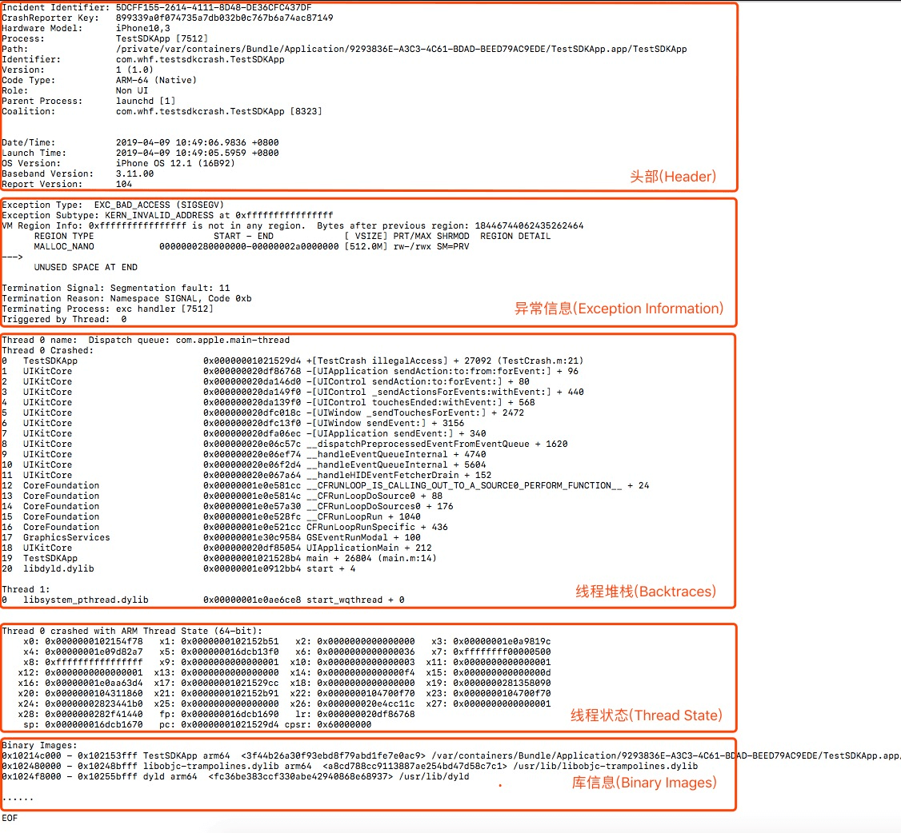
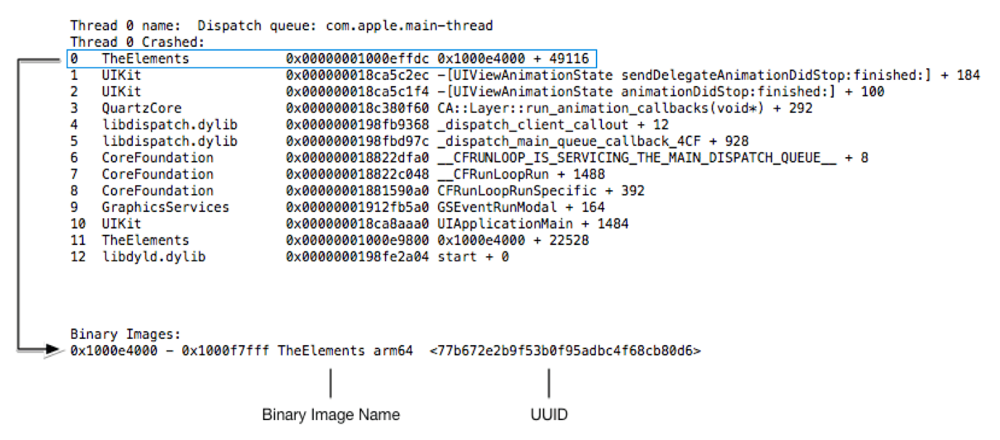
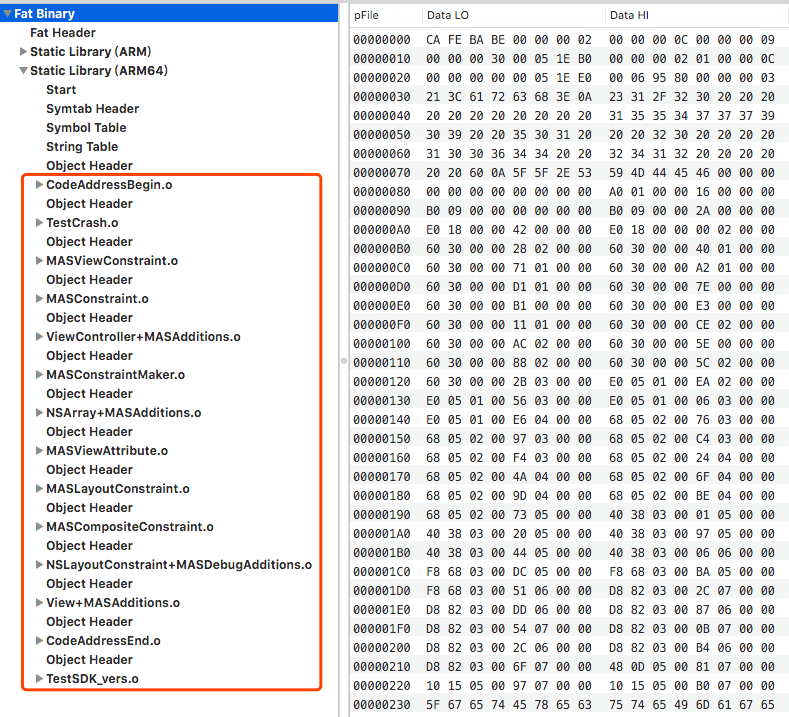
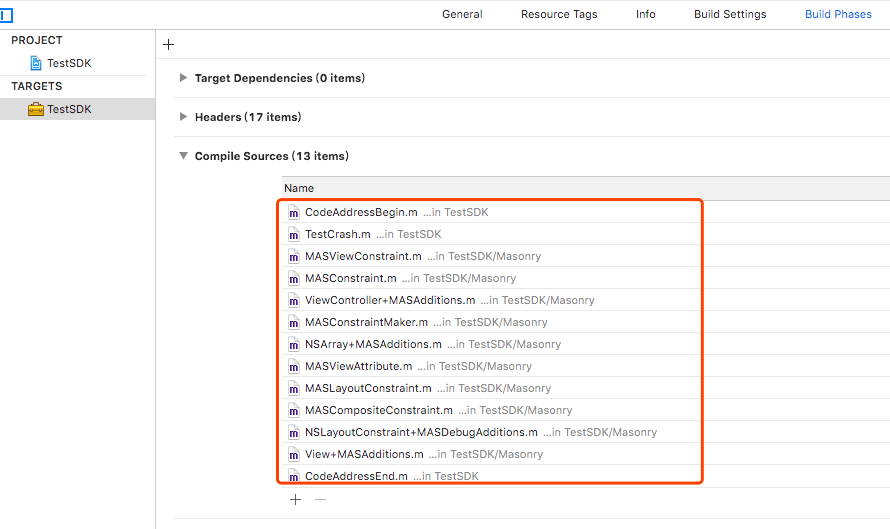
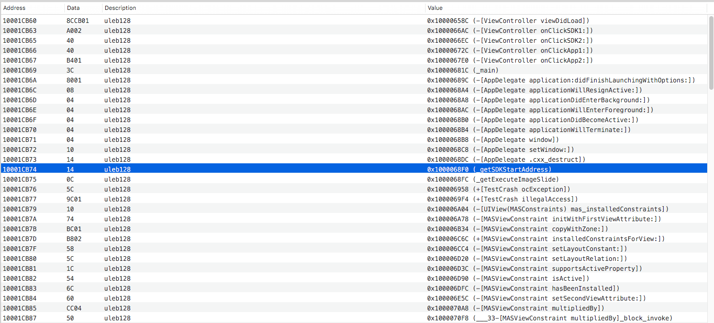
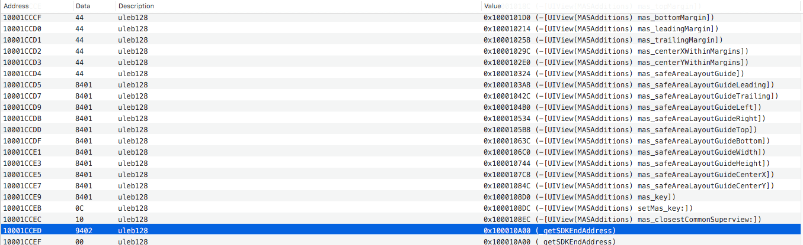

iOS如何区分App和SDK内部crash

Contents
最近在开发iOS平台上的SDK，提供给合作方使用。为了监控SDK自身的崩溃率，我们在SDK中加入了抓取crash的功能。但收集上来的日志中有较多合作方App的crash，并且接入SDK的App数量很多，产生的崩溃日志量非常大。靠人力从海量的日志中筛选出我们SDK的crash日志非常困难。
于是就有了这个问题，如何自动区分SDK内部的crash和App的crash？
iOS crash日志格式
想区分不同类型的crash，需要先了解iOS的crash日志格式。iOS的crash报告日志可以分为头部(Header)、异常信息(Exception Information)、诊断信息(Additional Diagnostic Information)、线程堆栈(Backtraces)、线程状态(Thread State)、库信息(Binary Images)这六个部分。如图：

其中:
头部(Header): 硬件型号，系统版本，进程名称、id，bundleid，崩溃时间，crash日志报告格式版本号等信息。
异常信息(Exception Information): 崩溃类型、崩溃代码及触发崩溃的线程等信息。
诊断信息(Additional Diagnostic Information): 非常简略的诊断信息。不是每个崩溃都会有诊断信息。
线程堆栈(Backtraces): 崩溃发生时，各个线程的方法调用栈的详细信息。触发崩溃的线程会被标记上Crashed。
线程状态(Thread State): 崩溃时寄存器的状态。
库信息(Binary Images): 加载的动态库信息。
查看crash日志时，首先会在【异常信息(Exception Information)】中通过名叫“Triggered by Thread”的字段查看是哪个线程发了crash。例如上图中的“Triggered by Thread: 0”表示是0号线程也就是主线程发生了crash。在【线程堆栈(Backtraces)】信息中，也会看的线程号下面会用“Thread xx Crashed”标记该线程发生了crash。
在【线程堆栈(Backtraces)】信息中，有方法编号，方法所属的模块名，方法地址，方法符号信息或者方法所在的段地址及偏移量。每个方法的地址是包含在所属模块的地址范围内。如图：

图中显示，0号线程即主线程发生了crash，地址是0x00000001000effdc，在TheElements这个模块内。在【库信息(Binary Images)】信息中可以找到这个二进制模块，也就是App可执行文件TheElements，其他的模块是系统加载的动态库，比如UIKit、CoreFoundation等（这张图并没有显示出来，在第一张图中可以看到另外两个系统的动态库，其他系统库的太多了，图中并没有展示）。
如何确定动态库的crash
熟悉了crash日志报告的格式，我们知道动态库的crash的方法栈中是带有动态库的名字的，一眼就能看出是哪个模块发生了crash。通过格式化好的crash日志，就能够区分App的crash和引入的动态SDK的crash。如果要在App运行时crash后立即判断，可以通过crash的地址，找到包含这个地址的二进制模块就行了。
如何确定静态库的crash
通过Crash的地址可以找到该方法所属的二进制模块。然而，如果SDK是静态库引入的，其代码会被加入到App的代码段中，SDK的代码和App的代码属于同一个二进制模块，这样就不容易判断了。例如第一张图中的crash在 [TestCrash illegalAccess], 这段代码是在SDK中的，而所属的模块是TestSDKApp，即App的代码段，这样就不知道是App还是SDK内部crash了。
|
|
对于这个问题，当时我们有这几个选择： 一个是服务端收集到crash日志后，通过符号文件解析出对应的堆栈信息，然后通过crash的符号来判断是app的crash还是sdk的内部的crash。另一个方法就是通过地址来判断。
通过符号来判断
这个思路很简单，就是人查看crash日志识别不同crash的过程。大致步骤如下：
- 符号化服务端crash日志
- 收集SDK中所有的特征符号，比如类名，方法名等等
- 处理crash日志，对比SDK中的特征符号，确定该crash是SDK内部crash
思路简单，但是会带来很多问题。如收集SDK中类名费时费力；SDK中某些引入的第三方库没有符号信息；不同版本的SDK符号特征不一样。每个问题都能折磨人。
通过地址来判断
既然都知道了crash发生的地址，为什么不通过地址来判断是否在SDK内部呢，就像动态库的crash一样？于是问题就变为了如何确定SDK代码被连接进App后的起始地址和结束地址。
静态库SDK二进制文件结构
这里对SDK的文件格式不详细介绍，看图：

图中红框中标出的是该SDK包含的object文件内容，即文件编译后的产物。这里的顺序是如何确定的呢？看下xcode中【Targets->Build Phases->Complie Sources】就明白了，是xcode编译这些源文件的顺序。如图：

也就说，SDK的文件相当于一个object文件的容器，把源文件的编译产物按顺序打包组织在一起就是SDK的二进制文件了。把SDK二进制连接进App可执行文件后是什么样的？我们先看下App可执行文件的结构。
App可执行文件结构
同样的，我们对App可执行文件的格式不详细展开，只看连接进App的SDK是如何组织的。如图：


这两张图是App可执行文件中反汇编后，获取的方法地址列表。SDK中方法太多，只截取了开始部分和结束部分。可以看出，SDK中的方法都是集中在一块，并且是按照SDK文件中的object文件顺序排列。
于是可以得出这样一个结论
SDK中文件的编译顺序最终体现在连接进App可执行文件中方法的地址顺序。也就是，SDK连接进App可执行文件后，基本上是在一块连续的地址上；App执行时，加载进内存也会在一块连续的内存地址上。
这样我们就通过crash方法地址就能确定是否是SDK内部的crash。于是乎我们就剩下最后一个问题了，如何确定SDK代码段的起始地址和结束地址？
如何确定SDK代码起始和结束地址
细心的人可能已经从前面的图片中看出来怎么做了。对，就是在编译文件最前面添加一个文件，最后面添加一个文件。比如图片中的CodeTextBegin.m 和 CodeTextEnd.m ，然后第一个文件的第一个方法地址就是SDK编译文件中所有方法的起始地址，最后一个文件的最后一个方法地址就是SDK编译文件中所有方法的结束地址。例如：
CodeTextBegin.m放在所有编译文件的最前面，里面的第一个方法是获取该方法自身的地址。
|
|
CodeTextEnd.m放在所有编译文件的最后面，里面的最后一个方法是获取该方法自身的地址。
|
|
这样我们调用这个两个方法就能都到所有编译文件中的方法的起止地址。
为什么是SDK编译文件中的所有方法呢？因为，SDK中还可以引入其他SDK。这个时候，引入的其他SDK的所有方法会添加在编译文件的最后一个方法后面。所以，如果我们要包含SDK所有方法时，应该在SDK中引入一个SDK，并且放在所有引入的SDK最后面，这个最后面的SDK中，有个方法可以返回自身的地址。
这样，我们就能通过crash时的方法地址来判断是否是SDK内部的crash了。
在根据上面的方法做完后测试，SDK运行时获取的方法地址和在MachOView工具中看到的App可执行文件中的地址对应不上，这是为什么？
其实是iOS系统引入了ASLR机制，即Address space layout randomization。在App运行时，iOS系统会给加载进内存的二进制模块一个随机的偏移地址，我们只需要把运行时的地址减掉这个偏移地址好了
代码如下：
|
|
用获取到的方法地址减去偏移值就是App可执行文件中的地址：
|
|
总结
前面按照解决问题的步骤贴图讲的，比较混乱。这里总结下，我们可以通过SDK的起止地址是否包含crash的方法地址来判断crash是否发生在SDK内部。 具体如下：
- 动态库有明确的起止地址，可以用crash方法的地址直接来判断。
- 静态库中的方法会按编译时的顺序连接进App可执行文件。
- 在第一个编译文件最前面添加一个方法，返回其自身地址，作为SDK的起始地址
- 在最后一个编译文件的最后面添加一个方法，返回其自身地址，作为SDK的所有编译文件方法的结束地址，如果SDK中有引入其他第三方库则需步骤5
- 在最后一个被引入SDK的三方库后面，添加一个库，库中导出一个（4）中一样的方法，作为SDK的结束地址
- crash时，把获取到的crash地址与SDK的起止地址进行比较就能知道是否是SDK内部的crash。主要比较地址时，如果crash地址减去了slide，则对应的SDK起止地址也应减去slide。